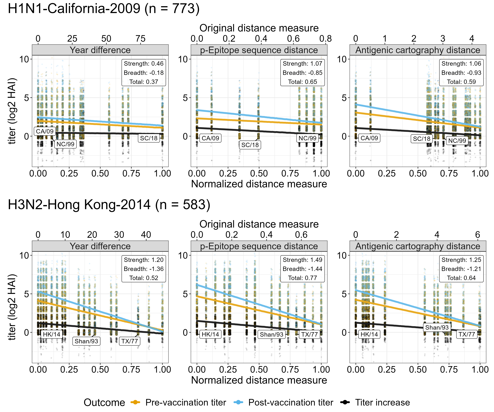
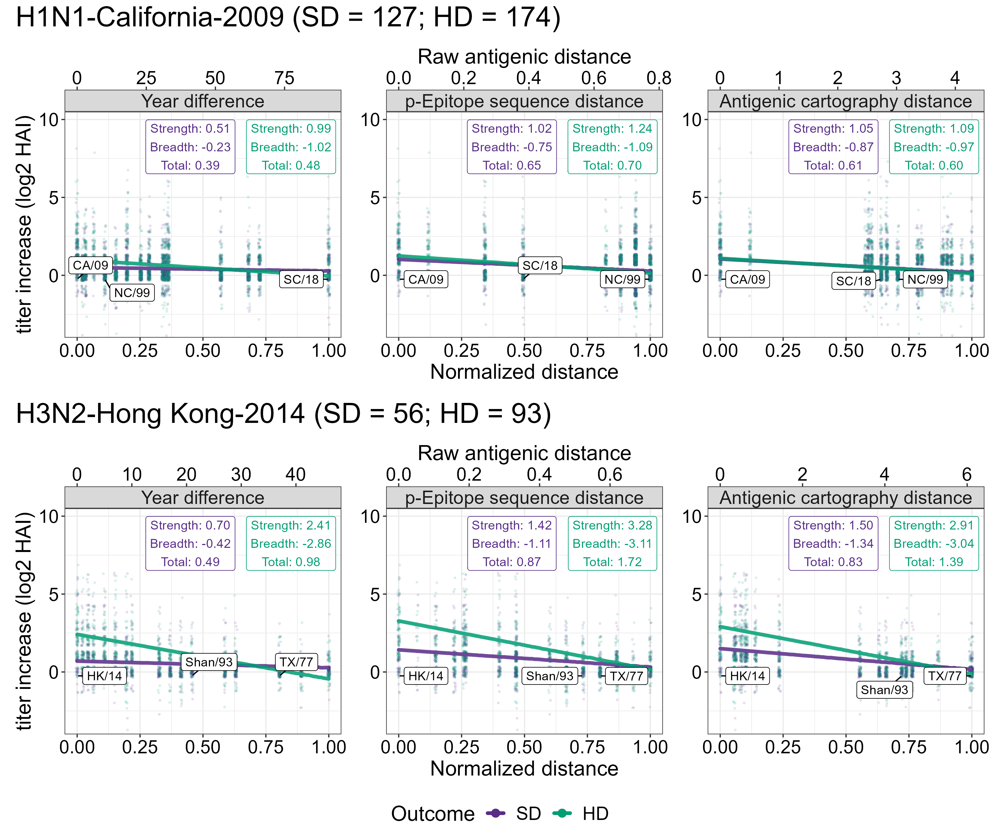
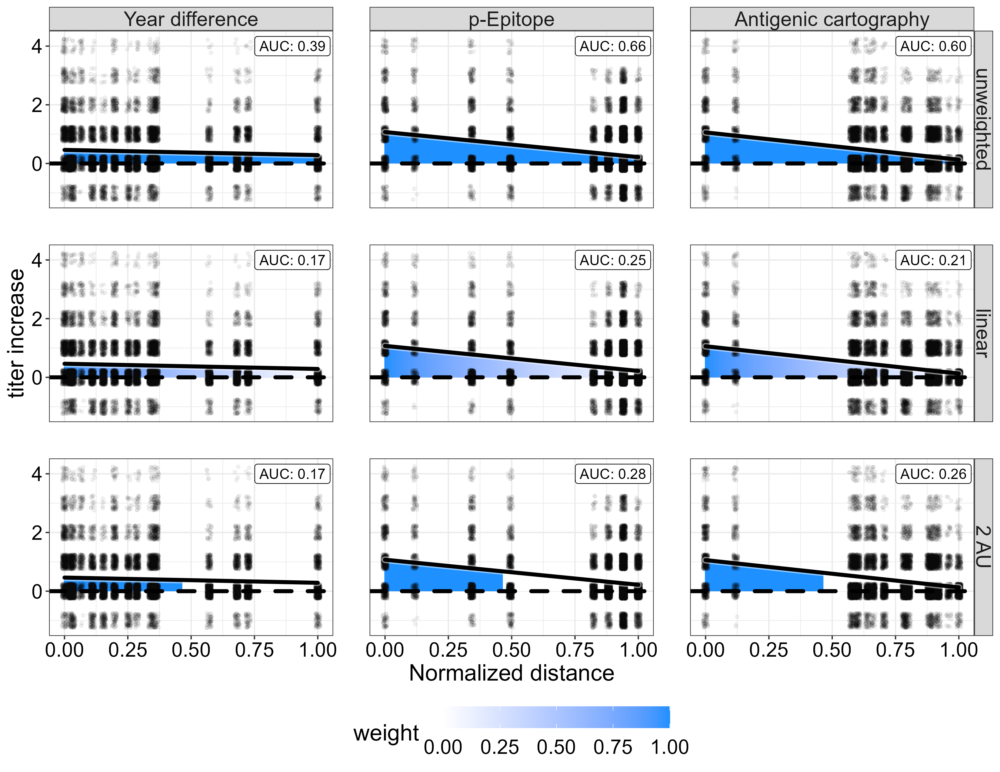

Quantification of influenza antibody vaccine responses accounting for both vaccine strength and breadth
Amanda Skarlupka1, Zane Billings1, Ted Ross1,2, Andreas Handel1
1 Department of Epidemiology and Biostatistics, University of Georgia
2 Cleveland Clinic’s Florida Research and Innovation Center
Background
- For future universal influenza vaccine candidates, it will be important to quantify protective immunity against not just the vaccine components, but a broad range of genetically different influenza strains.
- HAI antibody titer is the most commonly used correlate of protection for influenza.
- To determine vaccine strength, HAI increase or post-HAI titers against the homologous vaccine components are measured.
- To determine vaccine breadth, HAI titers against heterologous strains are measured.
- Unless the panel of heterologous strains are the same, it is difficult to compare between vaccines/studies.
- Quantifying homologous strength, heterologous breadth, and total vaccine response will be useful.
Approach
- We analyzed HAI data pre- and post-vaccination for vaccine and heterologous strains from the UGAFluVac cohort study.
- We determined the distance between vaccine strains and heterologous test strains using 3 measures: 1) Years, 2) Genetic Distance, 3) Antigenic Distance.
- We fitted linear models and computed intercept, slope, and area under the titer increase curve to determine strength, breadth and total vaccine response.
- We illustrated how this framework can be applied to compare Standard Dose (SD) with High Dose (HD) Fluzone vaccines.
Distance measure comparison

Figure 1: HAI titers for the three distance measures: 1) Years; 2) Genetic distance as quantified by p-epitope; 3) Antigenic distance quantified by shortest path on an antigenic cartography map. Each distance measure was normalized to have comparable ranges between 0 and 1. (Homologous) Strength = Intercept of fitted line. (Heterologous) Breadth = Slope of fitted line. Total response = Area under the curve/line. Standard dose vaccine recipients only.
Dose comparison example

Figure 2: Strength, breadth and total amounts of HAI titer increase for standard dose (SD) and high dose (HD) vaccine recipients. Only individuals 65 years and above are included.
Extensions
- Multi-level statistical models might help further refine the estimates.
- Models that are more flexible than linear models can be explored.
- Interaction between strength and breadth needs consideration.
- Different weighting for total response calculations are possible.

Acknowledgements
This project is partially supported by NIH contract 75N93019C00060.